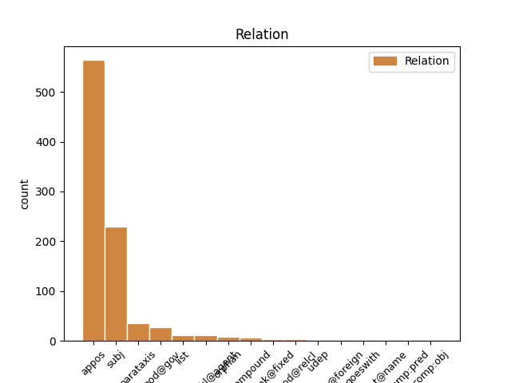
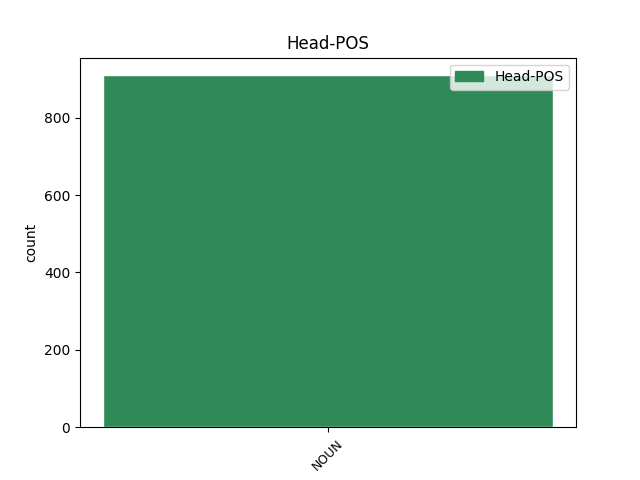
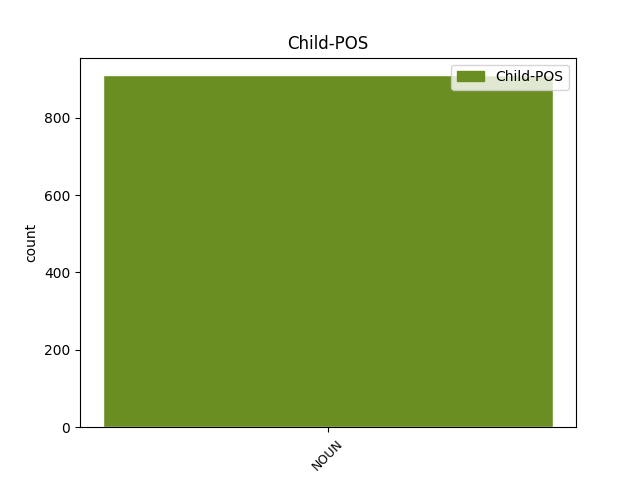

Distribution of features within this leaf



Agreement Rules sorted by frequency.
- When the dependent token is the appositional modifier(appos) of the head token, and the head token is NOUN and the dependent token is NOUN.
1 Кот кот NOUN NN Animacy=Anim|Case=Nom|Gender=Masc|Number=Sing 0 _ _ _
2 Икс икс NOUN NN Animacy=Inan|Case=Nom|Gender=Masc|Number=Sing 1 appos _ _
3 является _ _ _ _ 0 _ _ _
4 сторонником _ _ _ _ 0 _ _ _
5 автоматизации _ _ _ _ 0 _ _ _
6 труда _ _ _ _ 0 _ _ _
7 и _ _ _ _ 0 _ _ _
8 поклонником _ _ _ _ 0 _ _ _
9 загородного _ _ _ _ 0 _ _ _
10 отдыха _ _ _ _ 0 _ _ _
11 , _ _ _ _ 0 _ _ _
12 рыбалки _ _ _ _ 0 _ _ _
13 и _ _ _ _ 0 _ _ _
14 сбора _ _ _ _ 0 _ _ _
15 грибов _ _ _ _ 0 _ _ _
16 . _ _ _ _ 0 _ _ _
1 HD HD NOUN NN Animacy=Inan|Case=Nom|Gender=Masc|Number=Sing 3 subj _ _
2 -- _ _ _ _ 0 _ _ _
3 сокращение сокращение NOUN NN Animacy=Inan|Case=Nom|Gender=Neut|Number=Sing 0 _ _ _
4 от _ _ _ _ 0 _ _ _
5 `` _ _ _ _ 0 _ _ _
6 Heavy _ _ _ _ 0 _ _ _
7 Duty _ _ _ _ 0 _ _ _
8 '' _ _ _ _ 0 _ _ _
9 : _ _ _ _ 0 _ _ _
10 усиленная _ _ _ _ 0 _ _ _
11 модификация _ _ _ _ 0 _ _ _
12 . _ _ _ _ 0 _ _ _
1 Деньги _ _ _ _ 0 _ _ _
2 на _ _ _ _ 0 _ _ _
3 строительство _ _ _ _ 0 _ _ _
4 были _ _ _ _ 0 _ _ _
5 собраны _ _ _ _ 0 _ _ _
6 польской _ _ _ _ 0 _ _ _
7 общиной _ _ _ _ 0 _ _ _
8 , _ _ _ _ 0 _ _ _
9 численность _ _ _ _ 0 _ _ _
10 которой _ _ _ _ 0 _ _ _
11 в _ _ _ _ 0 _ _ _
12 Москве _ _ _ _ 0 _ _ _
13 в _ _ _ _ 0 _ _ _
14 конце _ _ _ _ 0 _ _ _
15 XIX _ _ _ _ 0 _ _ _
16 века _ _ _ _ 0 _ _ _
17 достигала _ _ _ _ 0 _ _ _
18 30 _ _ _ _ 0 _ _ _
19 тысяч тысяча NOUN NN Animacy=Inan|Case=Gen|Gender=Fem|Number=Plur 20 mod@gov _ _
20 человек человек NOUN NN Animacy=Anim|Case=Gen|Gender=Masc|Number=Plur 0 _ _ _
21 , _ _ _ _ 0 _ _ _
22 и _ _ _ _ 0 _ _ _
23 католиками _ _ _ _ 0 _ _ _
24 других _ _ _ _ 0 _ _ _
25 национальностей _ _ _ _ 0 _ _ _
26 по _ _ _ _ 0 _ _ _
27 всей _ _ _ _ 0 _ _ _
28 России _ _ _ _ 0 _ _ _
29 . _ _ _ _ 0 _ _ _
1 То _ _ _ _ 0 _ _ _
2 есть _ _ _ _ 0 _ _ _
3 для _ _ _ _ 0 _ _ _
4 достижения _ _ _ _ 0 _ _ _
5 сильного _ _ _ _ 0 _ _ _
6 полового _ _ _ _ 0 _ _ _
7 возбуждения _ _ _ _ 0 _ _ _
8 такому _ _ _ _ 0 _ _ _
9 мальчику мальчик NOUN NN Animacy=Anim|Case=Dat|Gender=Masc|Number=Sing 0 _ _ _
10 ( _ _ _ _ 0 _ _ _
11 а _ _ _ _ 0 _ _ _
12 в _ _ _ _ 0 _ _ _
13 будущем _ _ _ _ 0 _ _ _
14 -- _ _ _ _ 0 _ _ _
15 и _ _ _ _ 0 _ _ _
16 мужчине мужчина NOUN NN Animacy=Anim|Case=Dat|Gender=Masc|Number=Sing 9 parataxis _ SpaceAfter=No
17 ) _ _ _ _ 0 _ _ _
18 требуется _ _ _ _ 0 _ _ _
19 гораздо _ _ _ _ 0 _ _ _
20 меньшее _ _ _ _ 0 _ _ _
21 влияние _ _ _ _ 0 _ _ _
22 , _ _ _ _ 0 _ _ _
23 чем _ _ _ _ 0 _ _ _
24 среднестатистическому _ _ _ _ 0 _ _ _
25 . _ _ _ _ 0 _ _ _
1 Закончил _ _ _ _ 0 _ _ _
2 СПбГУ _ _ _ _ 0 _ _ _
3 ( _ _ _ _ 0 _ _ _
4 Восточный _ _ _ _ 0 _ _ _
5 факультет факультет NOUN NN Animacy=Inan|Case=Nom|Gender=Masc|Number=Sing 0 _ _ _
6 , _ _ _ _ 0 _ _ _
7 кафедра кафедра NOUN NN Animacy=Inan|Case=Nom|Gender=Fem|Number=Sing 5 list _ _
8 иранской _ _ _ _ 0 _ _ _
9 филологии _ _ _ _ 0 _ _ _
10 ) _ _ _ _ 0 _ _ _
11 в _ _ _ _ 0 _ _ _
12 1920 _ _ _ _ 0 _ _ _
13 году _ _ _ _ 0 _ _ _
14 . _ _ _ _ 0 _ _ _
1 Сборную _ _ _ _ 0 _ _ _
2 страны _ _ _ _ 0 _ _ _
3 представляли _ _ _ _ 0 _ _ _
4 13 _ _ _ _ 0 _ _ _
5 участников участник NOUN NN Animacy=Anim|Case=Gen|Gender=Masc|Number=Plur 0 _ _ _
6 , _ _ _ _ 0 _ _ _
7 из _ _ _ _ 0 _ _ _
8 которых _ _ _ _ 0 _ _ _
9 7 _ _ _ _ 0 _ _ _
10 женщин женщина NOUN NN Animacy=Anim|Case=Gen|Gender=Fem|Number=Plur 5 mod@relcl _ SpaceAfter=No
11 . _ _ _ _ 0 _ _ _
1 Важной _ _ _ _ 0 _ _ _
2 вехой _ _ _ _ 0 _ _ _
3 становится _ _ _ _ 0 _ _ _
4 год _ _ _ _ 0 _ _ _
5 2004 _ _ _ _ 0 _ _ _
6 , _ _ _ _ 0 _ _ _
7 когда _ _ _ _ 0 _ _ _
8 в _ _ _ _ 0 _ _ _
9 России _ _ _ _ 0 _ _ _
10 зарождается _ _ _ _ 0 _ _ _
11 фактически _ _ _ _ 0 _ _ _
12 вторая _ _ _ _ 0 _ _ _
13 по _ _ _ _ 0 _ _ _
14 значимости _ _ _ _ 0 _ _ _
15 после _ _ _ _ 0 _ _ _
16 московской _ _ _ _ 0 _ _ _
17 сцена _ _ _ _ 0 _ _ _
18 , _ _ _ _ 0 _ _ _
19 а _ _ _ _ 0 _ _ _
20 именно _ _ _ _ 0 _ _ _
21 кировская _ _ _ _ 0 _ _ _
22 стрит-панк стрит-панк NOUN NN Animacy=Inan|Case=Nom|Gender=Masc|Number=Sing 23 compound _ _
23 сцена сцена NOUN NN Animacy=Inan|Case=Nom|Gender=Fem|Number=Sing 0 _ _ _
24 . _ _ _ _ 0 _ _ _
1 Он _ _ _ _ 0 _ _ _
2 прогоняет _ _ _ _ 0 _ _ _
3 Титана _ _ _ _ 0 _ _ _
4 , _ _ _ _ 0 _ _ _
5 но _ _ _ _ 0 _ _ _
6 его _ _ _ _ 0 _ _ _
7 выдаёт _ _ _ _ 0 _ _ _
8 неправильное _ _ _ _ 0 _ _ _
9 произношение _ _ _ _ 0 _ _ _
10 названия _ _ _ _ 0 _ _ _
11 города _ _ _ _ 0 _ _ _
12 ( _ _ _ _ 0 _ _ _
13 Метро́ метро NOUN NN Animacy=Inan|Case=Nom|Gender=Neut|Number=Sing 0 _ _ _
14 - _ _ _ _ 0 _ _ _
15 Сити сити NOUN NN Animacy=Inan|Case=Nom|Gender=Masc|Number=Sing 13 flat@foreign _ _
16 вместо _ _ _ _ 0 _ _ _
17 Ме́тро _ _ _ _ 0 _ _ _
18 - _ _ _ _ 0 _ _ _
19 Сити _ _ _ _ 0 _ _ _
20 ) _ _ _ _ 0 _ _ _
21 , _ _ _ _ 0 _ _ _
22 и _ _ _ _ 0 _ _ _
23 схватка _ _ _ _ 0 _ _ _
24 заканчивается _ _ _ _ 0 _ _ _
25 тем _ _ _ _ 0 _ _ _
26 , _ _ _ _ 0 _ _ _
27 что _ _ _ _ 0 _ _ _
28 Хэлл _ _ _ _ 0 _ _ _
29 лишается _ _ _ _ 0 _ _ _
30 способностей _ _ _ _ 0 _ _ _
31 . _ _ _ _ 0 _ _ _
1 В _ _ _ _ 0 _ _ _
2 1834 _ _ _ _ 0 _ _ _
3 г. _ _ _ _ 0 _ _ _
4 башкир _ _ _ _ 0 _ _ _
5 было _ _ _ _ 0 _ _ _
6 239 _ _ _ _ 0 _ _ _
7 ( _ _ _ _ 0 _ _ _
8 15 _ _ _ _ 0 _ _ _
9 дворов _ _ _ _ 0 _ _ _
10 ) _ _ _ _ 0 _ _ _
11 , _ _ _ _ 0 _ _ _
12 тептярей тептярь NOUN NN Animacy=Anim|Case=Gen|Gender=Masc|Number=Plur 0 _ _ _
13 -- _ _ _ _ 0 _ _ _
14 20 _ _ _ _ 0 _ _ _
15 человек человек NOUN NN Animacy=Anim|Case=Gen|Gender=Masc|Number=Plur 12 orphan _ orig_deprel=nummod:gov|SpaceAfter=No
16 . _ _ _ _ 0 _ _ _
1 Лондон _ _ _ _ 0 _ _ _
2 стал _ _ _ _ 0 _ _ _
3 первым _ _ _ _ 0 _ _ _
4 городом _ _ _ _ 0 _ _ _
5 , _ _ _ _ 0 _ _ _
6 который _ _ _ _ 0 _ _ _
7 принял _ _ _ _ 0 _ _ _
8 игры игра NOUN NN Animacy=Inan|Case=Acc|Gender=Fem|Number=Plur 0 _ _ _
9 уже _ _ _ _ 0 _ _ _
10 третий _ _ _ _ 0 _ _ _
11 раз раз NOUN NN Animacy=Inan|Case=Acc|Gender=Masc|Number=Sing 8 udep _ _
12 ( _ _ _ _ 0 _ _ _
13 до _ _ _ _ 0 _ _ _
14 этого _ _ _ _ 0 _ _ _
15 они _ _ _ _ 0 _ _ _
16 проходили _ _ _ _ 0 _ _ _
17 там _ _ _ _ 0 _ _ _
18 в _ _ _ _ 0 _ _ _
19 1908 _ _ _ _ 0 _ _ _
20 и _ _ _ _ 0 _ _ _
21 1948 _ _ _ _ 0 _ _ _
22 годах _ _ _ _ 0 _ _ _
23 ) _ _ _ _ 0 _ _ _
24 . _ _ _ _ 0 _ _ _
1 Большой _ _ _ _ 0 _ _ _
2 популярностью _ _ _ _ 0 _ _ _
3 пользуются _ _ _ _ 0 _ _ _
4 соревнования _ _ _ _ 0 _ _ _
5 по _ _ _ _ 0 _ _ _
6 `` _ _ _ _ 0 _ _ _
7 дома дом NOUN NN Animacy=Inan|Case=Dat|Gender=Fem|Number=Sing 0 _ _ _
8 вакеро вакеро NOUN NN Animacy=Inan|Case=Dat|Gender=Neut|Number=Sing 7 flat@name _ SpaceAfter=No
9 '' _ _ _ _ 0 _ _ _
10 -- _ _ _ _ 0 _ _ _
11 традиционной _ _ _ _ 0 _ _ _
12 выездке _ _ _ _ 0 _ _ _
13 испанских _ _ _ _ 0 _ _ _
14 конных _ _ _ _ 0 _ _ _
15 пастухов _ _ _ _ 0 _ _ _
16 , _ _ _ _ 0 _ _ _
17 вакеро _ _ _ _ 0 _ _ _
18 . _ _ _ _ 0 _ _ _
Disagree Examples:
1 Член член NOUN NN Animacy=Anim|Case=Nom|Gender=Masc|Number=Sing 0 _ _ _
2 Русского _ _ _ _ 0 _ _ _
3 ПЕН _ _ _ _ 0 _ _ _
4 - _ _ _ _ 0 _ _ _
5 центра центр NOUN NN Animacy=Inan|Case=Gen|Gender=Masc|Number=Sing 1 appos _ SpaceAfter=No
6 . _ _ _ _ 0 _ _ _
1 Уклон уклон NOUN NN Animacy=Inan|Case=Nom|Gender=Masc|Number=Sing 5 subj _ _
2 реки _ _ _ _ 0 _ _ _
3 -- _ _ _ _ 0 _ _ _
4 1,23 _ _ _ _ 0 _ _ _
5 м м NOUN NN Animacy=Inan|Case=Gen|Gender=Masc|Number=Sing 0 _ _ _
6 / _ _ _ _ 0 _ _ _
7 км _ _ _ _ 0 _ _ _
8 . _ _ _ _ 0 _ _ _
1 В _ _ _ _ 0 _ _ _
2 августе _ _ _ _ 0 _ _ _
3 1976-го _ _ _ _ 0 _ _ _
4 года _ _ _ _ 0 _ _ _
5 был _ _ _ _ 0 _ _ _
6 приглашен _ _ _ _ 0 _ _ _
7 на _ _ _ _ 0 _ _ _
8 работу _ _ _ _ 0 _ _ _
9 в _ _ _ _ 0 _ _ _
10 азербайджанскую _ _ _ _ 0 _ _ _
11 редакцию _ _ _ _ 0 _ _ _
12 радио радио NOUN NN Animacy=Inan|Case=Gen|Gender=Neut|Number=Sing 0 _ _ _
13 `` _ _ _ _ 0 _ _ _
14 Свобода свобода NOUN NN Animacy=Inan|Case=Nom|Gender=Fem|Number=Sing 12 appos _ SpaceAfter=No
15 '' _ _ _ _ 0 _ _ _
16 . _ _ _ _ 0 _ _ _
1 1979 _ _ _ _ 0 _ _ _
2 -- _ _ _ _ 0 _ _ _
3 1985 _ _ _ _ 0 _ _ _
4 заместитель _ _ _ _ 0 _ _ _
5 главного _ _ _ _ 0 _ _ _
6 редактора _ _ _ _ 0 _ _ _
7 азербайджанской _ _ _ _ 0 _ _ _
8 редакции _ _ _ _ 0 _ _ _
9 , _ _ _ _ 0 _ _ _
10 Радио радио NOUN NN Animacy=Inan|Case=Gen|Gender=Neut|Number=Sing 0 _ _ _
11 `` _ _ _ _ 0 _ _ _
12 Свобода свобода NOUN NN Animacy=Inan|Case=Nom|Gender=Fem|Number=Sing 10 appos _ SpaceAfter=No
13 '' _ _ _ _ 0 _ _ _
14 . _ _ _ _ 0 _ _ _
1 Расстояние расстояние NOUN NN Animacy=Inan|Case=Nom|Gender=Neut|Number=Sing 10 subj _ _
2 до _ _ _ _ 0 _ _ _
3 районного _ _ _ _ 0 _ _ _
4 центра _ _ _ _ 0 _ _ _
5 Вологды _ _ _ _ 0 _ _ _
6 по _ _ _ _ 0 _ _ _
7 автодороге _ _ _ _ 0 _ _ _
8 -- _ _ _ _ 0 _ _ _
9 76 _ _ _ _ 0 _ _ _
10 км км NOUN NN Animacy=Inan|Case=Gen|Gender=Masc|Number=Plur 0 _ _ _
11 , _ _ _ _ 0 _ _ _
12 до _ _ _ _ 0 _ _ _
13 центра _ _ _ _ 0 _ _ _
14 муниципального _ _ _ _ 0 _ _ _
15 образования _ _ _ _ 0 _ _ _
16 Новленского _ _ _ _ 0 _ _ _
17 по _ _ _ _ 0 _ _ _
18 прямой _ _ _ _ 0 _ _ _
19 -- _ _ _ _ 0 _ _ _
20 16 _ _ _ _ 0 _ _ _
21 км _ _ _ _ 0 _ _ _
22 . _ _ _ _ 0 _ _ _